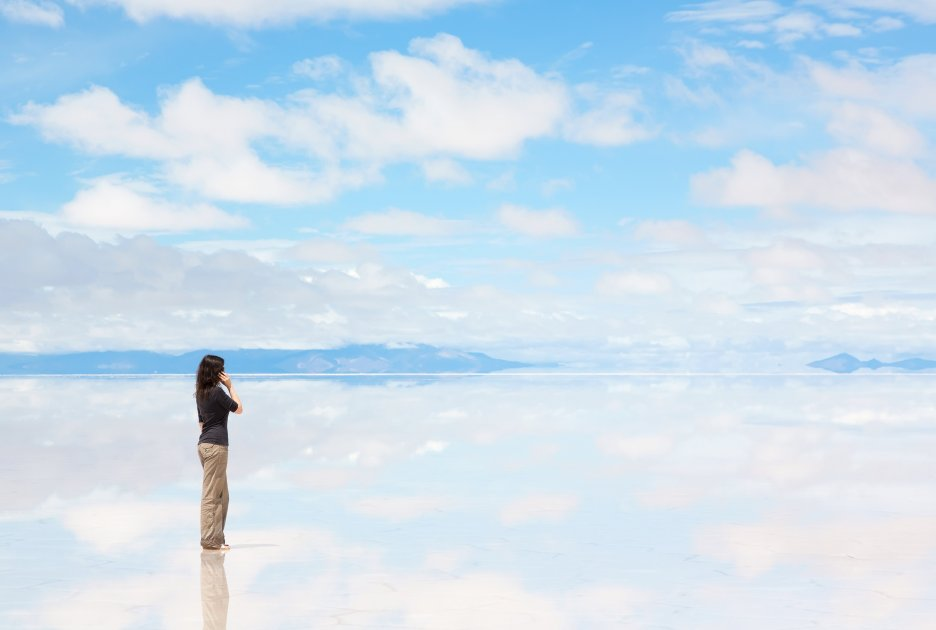

<h2>6. Солончак Уюни, Боливия</h2>
Перечисляя самые необычные места в мире, нельзя не вспомнить про Салар-де-Уюни. Природная жемчужина Боливии, Уюни — солончак, то есть высохшее соленое озеро. Настоящим чудом природы оно становится в сезон дождей. Покрываясь тонким слоем воды, соленая поверхность превращается в самое большое природное зеркало в мире. В погожий день в этом «зеркале» отражается ясное боливийское небо и место становится ещё более сказочным.
</br>

</br>
Местные жители утверждают, что лучшим временем для посещения солончака является февраль, но осенью и весной это уникальное место также очень красиво.
</br>

